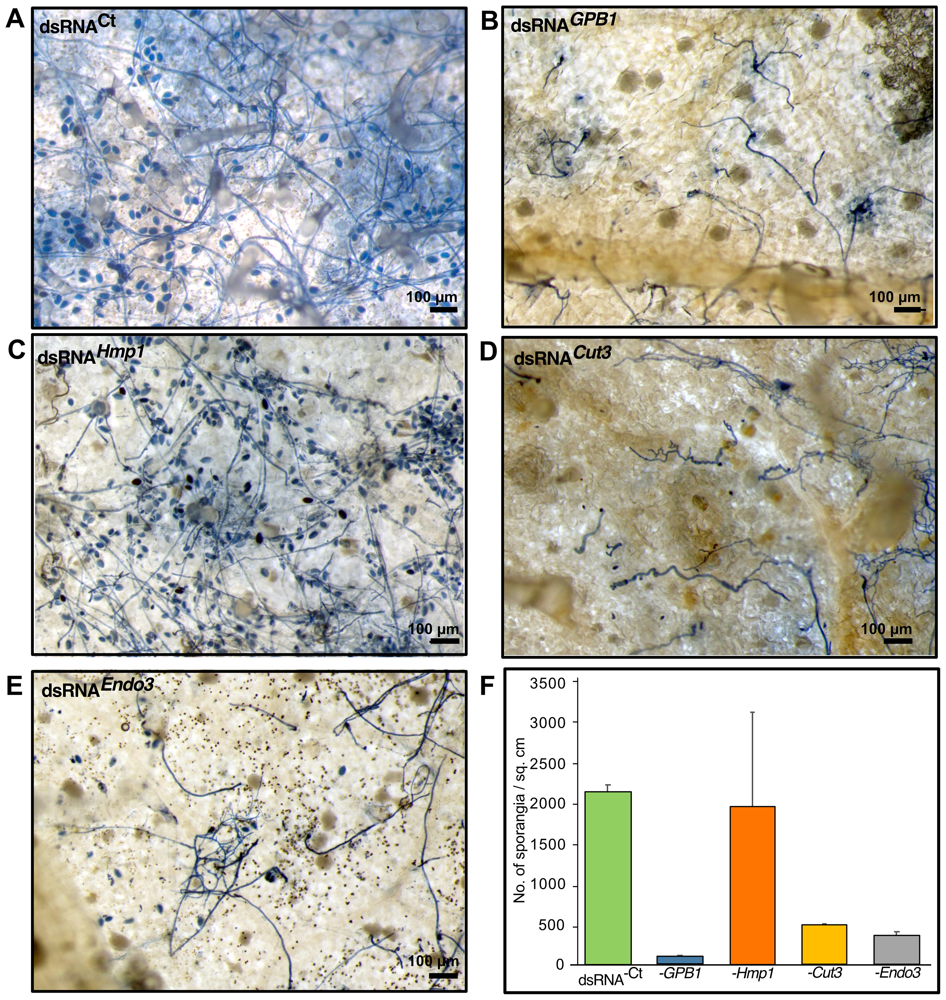
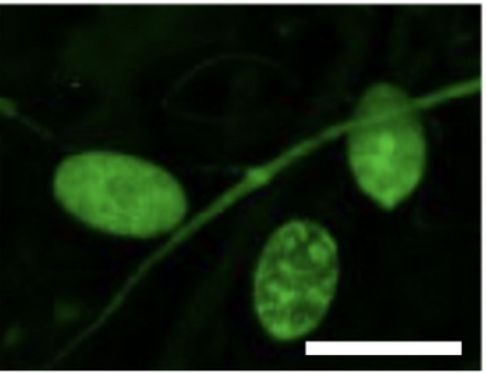

A decade spent at the genetic level of plant health: how disease takes hold, and how a plant's own biology becomes its protection. Now I translate that science out of the journal and into the field.
My training is in the molecular machinery of plant health: how viruses move, how pathogens take hold, and how a plant's own defences become precise, residue-free protection. The thread running through it is a refusal to let good science sit on a shelf.
Today I spend my time turning that decade of research into something that ships: building, testing, and reasoning about biology as a system rather than a set of isolated results. I move comfortably between the bench, the data, and the decisions a company has to make.
Plants and fungi can spot a threat and switch off the genes it needs to survive. I study how that built-in defence works, and how to aim it at one disease without leaving any chemical behind.
I spent years working out how plant viruses spread from cell to cell, why they change so quickly, and the tricks they use to switch off a plant's immune response.
A plant is always trading signals with the microbes around it, some harmful and some helpful. I read that exchange to see what keeps a plant healthy and what makes it sick.
Some fungi protect plants by keeping disease in check. I study how they do it, and how to make that protection dependable enough to use on a real farm.
Good lab results rarely reach a farmer on their own. My work closes that gap, taking a proven idea and turning it into something that works at scale.
Thirteen peer-reviewed papers and two book chapters across plant pathology, RNA biology, and plant-microbe interactions, including first-author work that opened new ground in RNA-based crop protection.
I co-founded an early-stage venture to take a decade of research out of the lab: a confidential translational program addressing the loss of crops between harvest and use, a problem that costs the global supply chain billions each year. The approach is biology-based, precise, and leaves no chemical residue.
What began as applied research is now a venture with a team and real-world validation behind it. I keep an open field-notes log of the parts I can share: the science, the decisions, and the conviction.
Read the field notes →